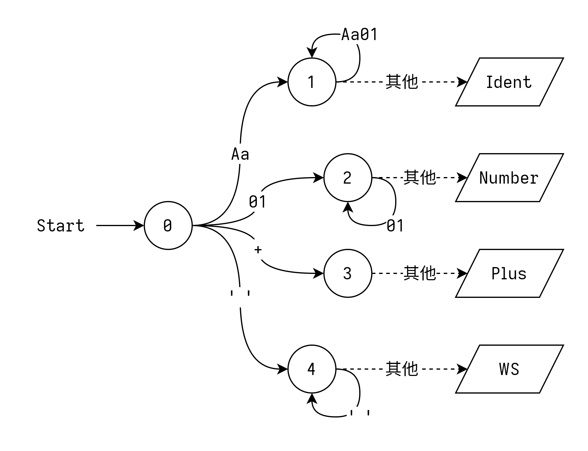
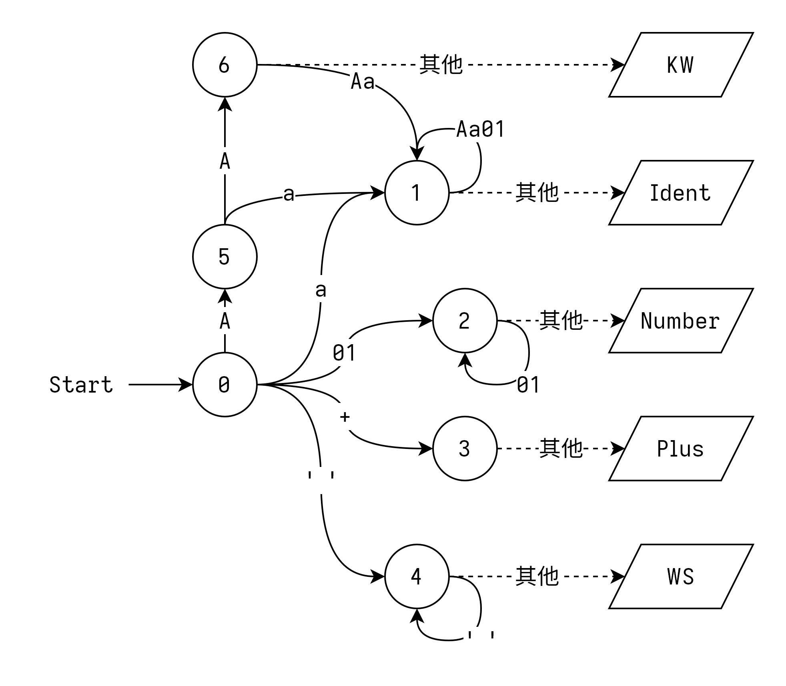
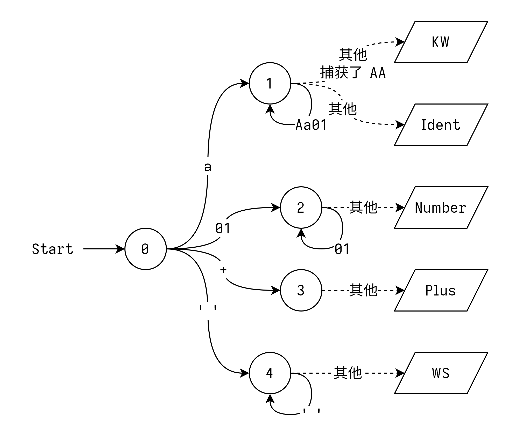

前言
编译不简单，祝好运。
Lab1: 词法分析
难度：简单
嗨！
第一个实验终于要开始了。这次实验的内容——鉴于你们也没学别的——是词法分析。词法分析本身不难，基本就是匹配正则表达式，用自动机也好用手写也好都不麻烦。预祝实验顺利！
实验要求
你的程序在读入一个 c0 源文件之后，应能输出词法分析之后得到的单词 (Token) 序列。 你需要丢弃所有表示空白符（如空格、回车）的单词，并将其他单词使用默认格式化每行一个按顺序输出。
你有两周时间完成这个实验。
评分标准
- 100% 正确性：你的代码应能通过 OJ 的检验
样例
输入：
fn foo(x: int) -> int {
return 42 + x * 21;
}
输出：
Fn
Ident "foo"
LParen
Ident "x"
Colon
Ident "int"
RParen
Arrow
Ident "int"
LBrace
Return
IntLiteral "42"
Plus
Ident "x"
IntLiteral "8"
Semicolon
RBrace
LAB1 实现指导
这次我们实现的是编译的第一步——词法分析。
词法分析的作用是将输入的字节流/字符流转换成单词（Token）序列，本质上就是使用一组正则表达式不断地匹配输入流，并在每次匹配出结果之后输出当前结果、返回开始状态，准备匹配下一个。
嗯……我其实挺想用允许自动化工具的，可是那样这个实验不就没意义了吗！
自动机
举个例子！比如咱们现在有一个语法，其中只有四种单词，长下面这样 （顺便一提，这种风格的 EBNF 你们之后还会见到很多次……）：
Ident -> [Aa] [Aa01]* // 标识符
Number -> [01]+ // 数字
Add -> '+' // 加号
WS -> ' '+ // 空白（之后会被丢弃）
那么我们可以构造这样一个自动机：

其中的虚线代表我们不读入这个字符，只获取它的值。这种操作一般称作为 unread（读入之后再放回去）或者 peek/lookahead（偷看输入的下一个值）。
看起来没啥问题。你可以自己模拟运行一下，看看这个自动机是不是将每个合法的句子都转换成了对应的单词序列。
那么如果我们再加一种单词，关键字 KW -> 'AA' 呢？自然，我们可以先把 0 -A-> X -A-> Y --> /KW/ 这条规则加到 NFA 里面，然后简化成 DFA，最终大概长这样：

——作为自动化工具生成的结果没啥问题，但是关键字多一些的话手工实现就比较难了。所以，在手工实现的时候我们一般采取下面这种方法：
注意到关键字 AA 是一个合法的标识符，那么我们完全可以在识别完标识符之后再去判断它等不等于 AA。于是，我们可以这么设计自动机：

是不是看起来好多了？
实际上，这种操作是广泛存在的——绝大多数编程语言的关键字都被设计成了合法的标识符，以此来降低词法分析的设计难度（以及自动机的状态数）。类似地，很多语言还会尽可能将不同单词的起始字符设计成互不重合的（也就是让自动机比起 “网” 长得更像一个 “树”），这样也可以尽量减少词法分析的难度。
你问例外？Java 最近新加了个关键字叫
non-sealed，设计者估计脑子有泡……
上手编写
说了这么多，来上手写一个吧！
对于输入流，我们可以采用一个实现了 Peekable 的迭代器（Java 用户可以用我们提供的 PeekableCharIter，Rust 用户可以用标准库的 std::iter::Peekable）。下面我们用 peek() 代表预读下一个字符，next() 代表前进一个字符。
先创建相应的数据结构：
class Lexer {
/** 输入数据 */
PeekableCharIter iter;
/** 构造单词内容的地方 */
StringBuilder sb;
/** 移到下一个字符 */
void next() {
char ch = iter.next();
sb.add(ch);
}
/** 错误处理，当然我们没有 */
void error() {
throw new RuntimeException();
}
/** 获取当前单词字符串 */
String take() {
String s = sb.toString();
sb.clear();
return s;
}
/** 我们的单词产生函数 */
Token nextToken() {
char ch = iter.peek();
// TODO: 写一个状态机
}
}
如果你喜欢原教旨主义状态机，请自便——下面我们编写的是一个更加简化的实现。
比如说我们要解析 Ident -> [Aa] [Aa01]* 这个单词，我们大概就要在 nextToken 里这么写：
Token nextToken() {
// ...
if (ch == 'a' || ch == 'A') {
// 吃掉这个字符
next();
// 剩下的事情我们放到这里做
return lexIdentRest();
} else {
// 其他情况
error();
}
}
/** 解析一个标识符 */
Token lexIdentRest() {
// 下一个字符依然可以构成标识符
if ("Aa01".indexOf(iter.peek()) != -1) {
next();
}
// 取出我们识别到的单词
String token = take();
// 判断是不是关键字，返回单词，大概这样
if (token == "AA") {
return new Token(TokenKind.AA, token);
} else {
return new Token(TokenKind.Ident, token);
}
}
不难对吧，那我们多加几种情况：
Token nextToken() {
// ...
else if (ch == '0' || ch == '1') {
// Number
next();
return lexNumberRest();
} else if (ch == '+') {
// Add
next();
return new Token(TokenKind.Add, take());
} else if (ch == ' ') {
// WS
while (iter.peek() == ' ') next();
return new Token(TokenKind.WS, take());
} else if (ch == -1) {
// 文件结尾 (EOF)
return new Token(TokenKind.EOF, null);
} else {
// 其他情况
error();
}
}
Token lexNumberRest() {
// 当依然能构成数字的时候继续
while (iter.peek() == '0' || iter.peek() == '1') next();
return new Token(TokenKind.Number, take());
}
这样一个简单的词法分析器就写完了，好耶！
仿照这个示例，你就能把实验要求的词法分析器写出来了。
等等，似乎忘了什么……对了，我们还要跳过空白符！
/** 这个是对外的接口 */
Token next() {
Token token;
do {
token = nextToken();
} while (token.kind != TokenKind.WS);
return token;
}
这下完整了。
……什么，你想知道参考实现里的词法分析器是怎么写的？
当然是自动生成的啦！欸嘿 (*/ω＼*)
输出
挨个 println 不就好了？
关于命令行输入
鉴于你编写的这个程序会贯穿整个实验，为了降低切换不同功能以及开启 Debug 模式的方便程度，咱强烈建议你添加某种命令行参数解析器。Java 用户可以试试 Argparse4J，Rust 用户可以尝试 Clap。
之后，你可以考虑把不同的功能（比如词法分析和语法分析）指派给不同的标志参数（比如 --lex 和 --parse），于是就可以用类似 myProgram --lex input.c0 的方式调用了。
Lab2: 语法分析
难度：简单
（探头）
在这次实验里，我们要将上一个实验生成的单词序列转换成语法树。这一部分也不难，在手动实现的情况下常用的是自顶向下的方法。更具体的内容，请看实验指导。
实验要求
你的程序在读入一个 c0 源文件之后，应能输出语法分析得到的抽象语法树。
你有两周时间完成这个实验。
评分标准
- 100% 正确性：你的代码应能通过 OJ 的检验
实现指导
阅读本章实验指导前，我们默认你已经完成了之前的实验，并且掌握了以下知识：
- 递归下降分析法（书上）
- 算符优先分析法（书上）
目录
写一个阳间的递归下降分析器
递归下降分析器怎么写，书上说的已经非常清楚了，这里只提几点在现代面向对象语言里写的时候需要注意的点。
分析器基础类型设计
public final class Parser {
// 在这里手动实现一个 peekable
private Lexer lexer;
private Token peeked = null;
/** 下一个单词 */
private Token next() {
if (peeked != null) {
Token token = peeked;
peeked = null
return token;
} else {
return lexer.next();
}
}
/** 预读下一个单词 */
private Token peek() {
if (peeked == null) {
peeked = lexer.next();
}
return peeked;
}
}
另外，加一点辅助函数会更舒适一点：
/** 如果类型相符，则吃掉下一个单词 */
private Token eatIf(TokenKind kind) {
if (peek().kind == kind) {
return next();
} else {
return null;
}
}
/** 如果类型相符，则吃掉下一个单词，否则抛出异常 */
private Token eatOrThrow(TokenKind kind) {
if (peek().kind == kind) {
return next();
} else {
return new RuntimeException("Wrong token kind");
}
}
在递归下降里实现算符优先分析法是不是搞错了什么
不，你没有——因为它太常用了所以一群人研究了一大堆方法出来
基础但是够用——优先级爬升法
你还记得自顶向下分析不能处理什么情况吗？——对，左递归。
但是！在分析表达式的时候，绝大多数运算符都是左结合的——比如，a+b+c 会被分析成 (a+b)+c 而不是 a+(b+c)——这样分析的时候就需要处理左递归了。此外，运算符之间有优先级关系层级很多，也不方便递归下降分析，怎么办？
你可能想到了算符优先分析法 (OPG)。但是回忆一下，它是一个自底向上的算法，而且需要一个栈来存放中间结果，跟递归下降分析合不来。幸运的是，在 1979 年，Martin Richards 和 Colin Whitby-Strevens 提出了一种适合嵌入递归下降中的算符优先分析法，称为 “优先级爬升法” (Precedence Climbing)。
先放一下伪代码吧：
# 解析一个表达式
def parse_expression():
# 分析一个项
term = parse_term()
# 传入这一项和最低的优先级
return climb(term, 0)
# 进行一次优先级爬升
# lhs 是当前算式的左手边
# pred 是当前可以解析的最小优先级
def climb(lhs, min_pred):
# 查看下一个单词
lookahead = peek_token()
# 当下一个单词是二元运算符，且优先级不小于当前优先级时
while is_binary_op(lookahead) && pred(lookahead) >= min_pred:
# 记录这个运算符并前进一个单词
op = lookahead
next()
# rhs 是当前算式的右手边。分析一个项
rhs = parse_term()
# 向前看一个单词
lookahead = peek_token()
# 当下一个单词是左结合的二元运算符，且优先级大于当前优先级
# 或者是右结合的二元运算符，且优先级大于等于当前优先级时
while is_binary_op(lookahead) && (
(is_left_assoc(lookahead) && pred(lookahead) > min_pred) ||
(is_right_assoc(lookahead) && pred(lookahead) >= min_pred)):
# 解析一个更优先的表达式
rhs = climb(rhs, pred(lookahead))
# 向前看一个单词
lookahead = peek_token()
# 组合当前的表达式
lhs = combine(lhs, op, rhs)
# 最后 lhs 就是我们需要的表达式
return lhs
这个算法的前提条件是 你要确定分析的所有带优先级的运算符都是二元中缀运算符（绝大部分情况都是这样的），同时你有一个可以分析运算项（比如带括号的表达式或者变量）的函数。
直接把伪代码翻译到你编写的语言里就好了。
如果你对原理感兴趣的话，可以思考一下把左递归文法 E -> E '+' T | T; T -> T '*' F | F 转换成 EBNF E -> T ('+' T)*; T -> F ('*' F)* 之后，分析 F * F 怎么省掉 E -> T 那一步。
还能更给力一点吗？——Pratt 分析法
在这个实验里你们应该用不到 Pratt 分析法。
推荐阅读:
优先级爬升分析法已经够用了。大概。除非……你想让前置负号的优先级比加法还低，或者你想解析一点三元条件表达式，这些事情就在优先级爬升法的能力范围之外了。这个时候，我们就要请出 Pratt 分析法——优先级爬升分析法的一般情况。
TODO: 待补完
Lab3: 语义分析
难度：简单
实验要求
你的程序在读入一个 c0 源文件之后，应能输出每个作用域的变量表。
你有一周时间完成这个实验。
评分标准
- 100% 正确性：你的代码应能通过 OJ 的检验
Lab4: 代码生成
难度：中
实验要求
你的程序在读入一个 c0 源文件之后，应能输出代表这段代码的中间代码。
你应当使用我们封装好的 SSA 代码生成库生成这段中间代码。如果你希望自己编写相关的函数，请提前联系助教，说明你不参加本次实验，并参与 Lab4-EX。如果你在完成本次实验之后又完成了 Lab4-EX, 最终成绩中只会记录 Lab4-EX 的成绩。
你有两周时间完成这个实验。
评分标准
- 100% 正确性：你的代码应能通过 OJ 的检验
Lab4 实现指导
阅读本章实验指导前，我们默认你已经完成了之前的实验，并且掌握了以下知识：
- 四元式中间代码
- 基本块
目录
关于为什么要用 SSA 格式
简而言之，方便优化。
你可能发现了，我们介绍这个项目的中间代码时提到，中间代码是 SSA（静态单赋值）格式，而不是一般的四元式。SSA 是什么呢？我们先粘一段维基百科：
在编译器的设计中，静态单赋值形式（static single assignment form，通常简写为 SSA form 或是 SSA）是中间表示（IR，intermediate representation) 的特性，每个变量仅被赋值一次。 在原始的IR中，已存在的变量可被分割成许多不同的版本，在许多教科书当中通常会将旧的变量名称加上一个下标而成为新的变量名称，以此标明每个变量及其不同版本。
我们为什么要用这种奇怪的表示方法呢？
我们举个例子啊——比如有这么一段普通四元式中间代码：
c = 1 + 2 // (1)
c = a + b // (2)
d = c // <-- 这里
那么你的编译器分析到标注的地方时，它用的是 (1) 还是 (2) 处的 c 呢？
你可能会说，很明显 (2) 处 c 被重新赋值了，所以答案是 (2) 处。对，那么很自然地，我们可以更进一步，把重新赋值的变量给改个名字，比如把 (1) 处的变量叫 c_1、(2) 处的叫 c_2。于是，我们的代码就变成了这样：
c_1 = 1 + 2
c_2 = a + b
d = c_2 // <-- 很明确这里用的是 c_2
这个时候我们得到的基本就是 SSA 格式的代码了。
从定义就可以看出来，SSA 格式的代码里，每个变量被且仅被赋值过了一次。通过这个操作，我们避免了在分析中间代码的时候寻找变量最后一次赋值的位置，从而也降低了代码优化的难度和运算量（在做 lab5 的时候应该可以清楚地体会到）。只不过目前的格式还有一点问题，他不能表示下面这样的代码：
int r;
if (a > 10) {
r = a;
} else {
r = b;
}
// 这里的 r 怎么表示？
为了解决这个问题，我们引入一个新的四元式指令—— Phi (Φ)。使用 Phi 指令，我们可以根据控制流的不同来给变量分配不同的值，就像下面这样（bb___ 表示对应编号的基本块）：
bb0:
if a > 10 goto bb1
else goto bb2
bb1:
r1 = a
goto bb3
bb2:
r2 = b
goto bb3
bb3:
// 如果控制流来自 bb1 则使用 r1 的值
// 如果控制流来自 bb2 则使用 r2 的值
r = Phi[(bb1, r1), (bb2, r2)]
有了 Phi 指令，我们就可以用 SSA 格式的中间代码表示任意的控制流了。
一些例子
下面举一些 C 式的控制流以及它的其中一种含义相同的 SSA 中间代码：
单侧 if 控制流
int i = 3;
if (a > 0) {
i = 6;
}
// i
bb0:
i_1 = 3
if a > 0 goto bb1
else goto bb2
bb1:
i_2 = 6;
goto bb2
bb2:
i = Phi[(bb0, i_1), (bb1, i_2)]
while 循环
int i = 0;
while (i < 10) {
i = i + 1;
}
// i
bb0:
i_0 = 0
goto bb1
bb1:
if i < 10 goto bb2
else goto bb3
bb2:
i_1 = Phi[(bb0, i_0), (bb1, i_2)]
i_2 = i_1 + 1
goto bb1
bb3:
i = Phi[(bb0, i_0), (bb1, i_2)]
关于这个例子里
i_1为什么能得到还没声明过的i_2的值，在 如何使用 SSA 生成算法 里面我们会简要讲解一下。
如何使用 SSA 生成算法
本文中的算法和内容主要来自 Matthias Braun, Sebastian Buchwald, Sebastian Hack 等人在 2013 年发表的论文 Simple and Efficient Construction of Static Single Assignment Form。如果你对算法的原理或者内核感兴趣，可以阅读这篇论文。当然了，SSA 代码的生成算法不止这一种。在本文结尾的扩展阅读中，你可以找到其他常用的生成算法。
生成 SSA 的算法有很多种。有的算法需要你先生成整个函数的中间表示才能工作，而有的需要在分析函数的过程中工作。本文使用的算法属于后者，需要你在 顺序遍历语法树 的同时调用相应的方法进行生成。下面我们来介绍一下这个算法如何使用。
我们提供的中间代码库中有一个名叫 FunctionBuilder 的类，这个类封装了 SSA 中间代码的生成算法，也是我们讲解的主体。
基本块的分类
为了让我们的生成算法能够正常工作，我们需要给基本块添加两个属性：filled 和 sealed。
filled（已填满）表示我们已经生成了这个基本块中的所有指令。 换句话说，一个被标记为 filled 的基本块中只能再填入对实际运算没有影响的 Phi 指令了。
sealed（已密封）表示我们已经遍历过了这个基本块的所有直接前驱。 换句话说，之后添加的基本块都不会直接跳转到已经被标记为 sealed 的基本块。通过 sealed 属性，我们可以保证 Phi 指令的来源不会发生变化。由于我们是顺序遍历的语法树，只有在遍历完一个基本块之后我们才会开始访问它的后继，所以所有标记为的 sealed 的基本块一定都已经被标记成了 filled1。
在算法的对外接口中，我们有 markFilled(bb) 和 markSealed(bb) 两个方法用来给基本块添加相应的标记。我们之后还会谈到它们。
在某些情况下，除了当前正在使用的基本块。不同人对 sealed 标记的用法可能不一样。如果你选择只要能够确定所有前驱就加 sealed 的话，这句话有可能不适用于当前基本块；如果你选择在标记为 filled 之后再标记为 sealed 的话，这句话就适用于当前基本块。策略选择的不同不会影响生成的代码。
变量的声明与使用
要生成 SSA 代码，我们需要给在不同位置读取和写入的变量标记合适的编号，以及在合适的地方插入 Phi 指令。不过在此之前，我们需要先给每个原始的变量标记唯一的编号，方便算法使用。一般来说，用一个计数器给所有出现的变量顺序编号就足够了。2
在算法的接口中，我们提供了 declareVar、readVar、writeVar 三个方法来管理变量的声明和使用。
declareVar(var, type) 告诉算法，编号为 var 的变量具有 type 的类型。这个方法主要是为了之后生成指令的时候可以确定变量的类型。
writeVar(var, inst, bb) 告诉算法，在基本块 bb 中，指令 inst 的运算结果3是给变量 var 的一次写入。
readVar(var, bb) 表示我们在基本块 bb 内读取了变量 var。这个方法会根据当前已知的变量定义来确定我们读取的变量对应的是哪一个指令的。如果变量有多个来源，我们就会插入一条 Phi 指令来解决这个冲突。这个方法返回对应的指令编号。
我们强烈不建议在这里使用变量名作为编号，因为变量会经常重名。
当然了，因为在 SSA 代码中每一个 “变量” 都是唯一一条指令的运算结果，我们的中间代码库在实现的时候就没有给 “变量” 设计独立的标号，而是直接使用指令的编号作为对应 SSA “变量” 的编号。或者可以这么说——在 SSA 中，我们根本不区分指令和变量。
例子
对于如下的 C 代码：
int a = 0;
int b = a + 1;
a = b + 1;
我们调用变量读写方法的顺序大致如下（省去了基本块参数和函数调用层级，只表示各个指令调用的时机和顺序）：
{
// int a = 0;
declareVar(a, int); // 声明变量 a
a_1 = /* 生成常数 0 的指令 */;
writeVar(a, a_1); // 我们写入了 a
}
{
// int b = a + 1;
declareVar(b, int); // 声明变量 b
a_1 = readVar(a); // 我们读取了 a
b_1 = /* 生成相加的指令 */;
writeVar(b, b_1); // 我们写入了 b
}
{
// a = b + 1;
b_1 = readVar(b); // 我们读取了 b
a_2 = /* 生成相加的指令 */;
writeVar(a, a_2); // 我们写入了 a
}
控制流的翻译
我们还有最后一个接口方法要介绍。addBranch(from, to) 告诉算法，存在一条从基本块 from 指向基本块 to 的跳转。
控制流的翻译方式实际上非常直接，我们只需要在合适的时间调用相应的方法就可以了。下面是一些例子：
If 控制流
对于一个如下的 if 控制流，
// bb_start
if /* cond */ {
// bb_if
/* if_body */
// bb_if_end
} else {
// bb_else
/* else_body */
// bb_else_end
}
// bb_next
我们调用相应方法的顺序大概是这样的（省去了生成指令和创建基本块的过程）：
visitIfCondition(/* 参数啥的 */) {
// 生成 cond 的指令
markFilled(bb_start);
markSealed(bb_start);
// 生成 bb_start 跳转到 bb_if 的指令
addBranch(bb_start, bb_if);
// 生成 if_body，以 bb_if_end 结尾
// 生成 bb_if_end 跳转到 bb_next 的指令
markFilled(bb_if_end);
markSealed(bb_if_end);
addBranch(bb_if_end, bb_next);
// 生成 bb_start 跳转到 bb_else 的指令
addBranch(bb_start, bb_else);
// 生成 else_body，以 bb_else_end 结尾
// 生成 bb_else_end 跳转到 bb_next 的指令
markFilled(bb_else_end);
markSealed(bb_else_end);
addBranch(bb_else_end, bb_next);
}
While 控制流
对于一个如下的 While 控制流，
// bb_start
while /* cond, bb_cond */ {
// bb_while
/* while_body */
// bb_while_end
}
// bb_next
我们调用相应方法的顺序大概是这样的（同上）：
visitWhileLoop(/* 参数啥的 */) {
markFilled(bb_start);
markSealed(bb_start);
// 生成 cond 所在的基本块和指令
markFilled(cond);
// 生成 bb_cond 跳转到 bb_while 的指令
addBranch(bb_cond, bb_while);
// 生成 bb_cond 跳转到 bb_next 的指令
addBranch(bb_cond, bb_next);
// 生成 while_body，以 bb_while_end 结尾
// 生成 bb_while_end 跳转到 bb_next 的指令
markFilled(bb_while_end);
markSealed(bb_while_end);
addBranch(bb_while_end, bb_cond);
// 注意：直到现在，bb_cond 的所有前驱才都遍历完毕
markSealed(bb_cond);
}
一点内部原理
这里讲的只是算法的大概思路，具体细节请看论文。
思考一下我们获取一个变量当前的值来源对应的指令编号时需要知道什么信息。
如果在同一个基本块之内的话，我们需要块内上一次赋值指令的编号；如果不在同一个基本块之内的话，我们需要知道这个基本块所有直接前驱里这个变量的定义。前者只要顺序遍历、跟踪写入指令的话很简单，后者在已知基本块的所有前驱的情况下也不难（挨个前驱调用这个算法，然后用一条 Phi 指令拼起来就好）。那么在前驱还不明确的情况下呢？——只要等到前驱都确定完了之后再来计算就可以了。
对，核心思想就是上面这么一点。我们可以把它跟算法提供的接口来进行一下对比：
- 跟踪每次赋值指令的编号由
writeVar负责 - 确定基本块的前驱由
addBranch负责 - 获取指令编号由
readVar负责 - 在前驱都确定完成之后调用算法由
markSealed负责
再加上起辅助作用的 declareVar 和 markFilled，嗯，这个算法就是这么简单。
- 既然算法这么简单，那为什么要封装好而不是让我们自己写呢？
- 那是因为这个算法内部还有一些优化部分要处理，自己写还是麻烦了点。（真那么想自己写你去写 Lab4EX 啊！）
扩展阅读
Lab4-EX: 代码生成加强版
难度：难
你决定自己实现一次 SSA 代码生成算法！我希望你在进行本实验前仔细了解过 SSA 代码的特性和它产生的原因。如果你读过任意一种 SSA 代码生成算法的介绍的话就更好了。
实验要求
你的程序在读入一个 c0 源文件之后，应能通过运行你自己编写的算法输出 SSA 中间代码。 我们不对此处输出的中间代码的运行速度等方面进行要求。
你需要在课程结束前完成本实验。
评分规则
- 50% 正确性：你的代码应能通过 OJ 上的自动评测。
- 50% 实验报告：你需要写一篇实验报告总结你的此次实验。你的实验报告应当包含以下内容：
- 你对 “在现代编译器中为什么常采用 SSA 代码” 的理解；
- 你使用的代码生成算法，以及它的特点；
- 大致讲解一下你的代码中算法各部分的功能，精确到函数级别即可。你也可以在代码中留下相应的注释，并在此处说明。
- 助教会检查你最后一次提交的代码，并进行查重。
Lab5: 代码优化
难度：较难
实验要求
你的程序在读入一个 c0 源文件之后，应能针对代码执行一定的优化，减少执行的指令数量。
你有两周时间完成这个实验。
评分标准
- 你的代码将在 OJ 上运行，并记录执行过的指令的加权总数量。加权的方式见下方说明。
- 你每一个测试点的最终得分是 参考实现的指令数量 / 你的指令数量 * 测试点基础分。
加权方式
运算指令：
| 指令 | 权重 |
|---|---|
| 加法 | 1 |
| 减法 | 1 |
| 移位 | 1 |
| 乘法 1 | 3 |
| 除法 1 | 7 |
跳转指令：
| 指令 | 权重 |
|---|---|
| 条件跳转 | 5 |
| 非条件跳转 | 3 |
| (跳转目标是当前的下一个基本块)2 | 1 |
| (距离上次跳转 n 条指令, n < 8)2 | 额外加 8-n |
其他指令：
| 指令 | 权重 |
|---|---|
| Phi 3 | 0 |
| 赋值 | 0 |
| 函数调用, n 个参数 | n*2 + 7 |
| 其他 | 1 |
这是为了模仿现代处理器的特点。现代处理器中，乘除法运算需要消耗的时钟周期长于加减法。例如，ARMv7 架构的 Cortex-A73 处理器中加减法指令消耗 1 个时钟周期，乘法约 3 -- 5 个时钟周期，除法约 10 -- 15 个。
这是为了模仿现代处理器的特点。现代处理器通常具有很长的流水线（快回去看 CSAPP），连续跳转时可能需要重新填满整个流水线，最多可能要消耗十几个时钟周期。当然，作为一个简化的判断标准，这里没有模拟分支预测的成功与失败的情况，而是用一个固定的值提示你少跳转。
Phi 指令本质上只是一个赋值，在真实的编译器中通过寄存器分配等操作可以基本消除掉，因此不计入指令总数。
三地址码 (TAC) 定义
概述
TAC 是一种
文法
grammar AzukiTac;
WS: [ \t]+ -> skip;
// Basic parts
fragment Digit: [0-9];
fragment Letter: [a-zA-Z];
fragment HexDigit: Digit | [a-fA-F];
fragment AlphaNum: Digit | Letter;
fragment IdentChar: AlphaNum | '_' | '$';
Number: Digit+;
Ident: IdentChar+;
HexNumber: HexDigit+;
Variable: '%' Number;
GlobalVariable: '@' Ident;
NumberLiteral: '#' (('+' | '-')? Number | '0x' HexNumber);
BasicBlock: 'bb' Number;
DiscardVariable: '%_';
// types
IntegerType: 'i' Number;
BooleanType: 'b' Number;
UnitType: 'unit';
// keywords
FN: 'fn';
GLOBAL: 'global';
// Operators
ADD: 'add';
SUB: 'sub';
MUL: 'mul';
DIV: 'div';
GT: 'gt';
GE: 'ge';
LT: 'lt';
LE: 'le';
EQ: 'eq';
NE: 'ne';
PHI: 'phi';
BRANCH: 'br';
IF: 'if';
UNREACHABLE: 'unreachable';
RETURN: 'return';
CALL: 'call';
// misc
LINEFEED: '\n';
// Grammar components
literal: NumberLiteral;
value: Variable | GlobalVariable | NumberLiteral;
int_ty: IntegerType;
bool_ty: BooleanType;
unit_ty: UnitType;
ptr_ty: '*' ty;
func_ty: FN function_param '->' ty;
ty: int_ty | bool_ty | unit_ty | ptr_ty | func_ty;
// instructions
binary_op: ADD | SUB | MUL | DIV | GT | GE | LT | LE | EQ | NE;
binary_inst: value binary_op value;
fn_param_list: (value (',' value)*)?;
fn_call_inst: CALL GlobalVariable '(' fn_param_list ')';
phi_source: '(' Variable ',' BasicBlock ')';
phi_inst: PHI '[' (phi_source (',' phi_source)*)? ']';
val_inst: value;
variable: Variable;
inst_lhs: ty variable | DiscardVariable;
inst_rhs: binary_inst | phi_inst | val_inst | fn_call_inst;
inst: inst_lhs '=' ty inst_rhs LINEFEED;
unreachable_inst: UNREACHABLE;
uncond_branch_inst: BRANCH BasicBlock;
cond_branch_inst: BRANCH BasicBlock IF value;
return_inst: RETURN value;
jump_insts:
(
unreachable_inst LINEFEED
| return_inst LINEFEED
| (( uncond_branch_inst | cond_branch_inst) LINEFEED)+
);
// basic block
basic_block_id: BasicBlock ':';
basic_block: basic_block_id LINEFEED inst* jump_insts;
// function
function_param: '(' (ty (',' ty)*)? ')';
function:
FN GlobalVariable function_param '->' ty '{' LINEFEED basic_block+ '}' LINEFEED;
// program
global_var: GLOBAL GlobalVariable '=' literal LINEFEED;
program: (global_var | function)*;